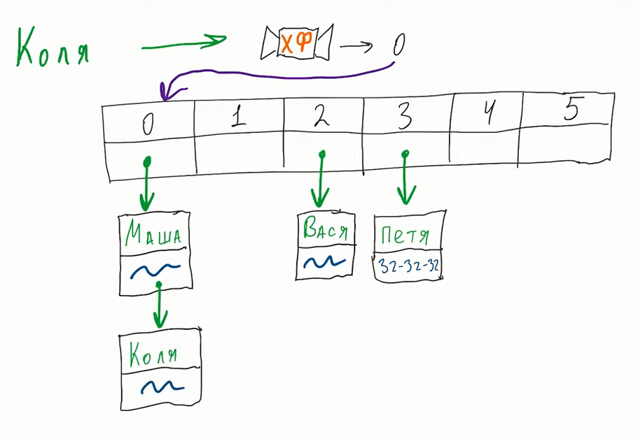
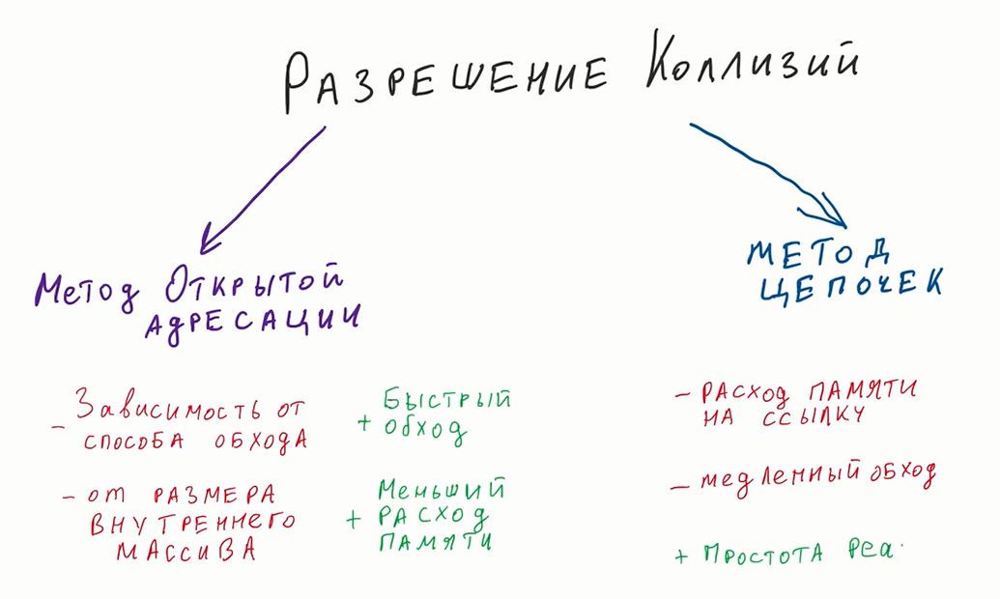

CI/CD - Continuous Integration / Continuous Delivery
Это практики которые позволяют разработчикам чаще и надёжнее развёртывать изменения ПО. СI/CD - одна из DevOps практик и также относится к Agile - практике.
Непрерывная интеграция (CI) - методология разработки при которой в код вносятся небольшие изменения с частыми коммитами. И поскольку большинство современных приложений разрабатываются с использованием различных платформ и инструментов, то появляется необходимость в механизме интеграции и тестировании вносимых изменений.
Цель CI - обеспечить автоматизированный и последовательный способ сборки, упаковки и тестирования приложений
Цель CD - автоматизировать развёртывание приложений в различные окружения.
9586
подробнее
Создание Python проекта через терминал
python -m venv venv // создать папку venv с локальным окружением
echo > main.py // создать файл main.py
venv\Scripts\activate // активация виртуального окружения
вписать имя файла + enter для его открытия
Доп функционал
source venv/bin/activate // открыть (venv) на linux
touch имя файла // создать файл на linux
deactivate// для деактивации виртуального окружения
pip install // далее библиотеки через пробел для установки библиотек
pip install -r requirements.txt// установка всех библиотек из файла
pip uninstall навание -y // для удаления
pip freeze // для просмотра списка установленных библиотек
pip freeze > requirements.txt// для записи списка установленных библиотек в файл
Python
Создание проекта
Типы данных
Типы данных в Python
Изменяемые: list dict set
Неизменяемые: int float string bool nontype tuple frozen-set и остальные
При любой попытке изменить неизменяемый объект, в памяти создаётся новый объект.
Разница между == и is в Python
== сравнивает по значениям is сравнивает по адресам в памяти
List в Python
List (список) в Python - упорядоченная изменяемая коллекция объектов произвольных типов (почти как массив, но типы могут отличаться). Сложность поиска O(n).
| Метод | Что делает |
|---|---|
| list.append(x) | Добавляет элемент в конец списка |
| list.extend(L) | Расширяет список list, добавляя в конец все элементы списка L |
| list.insert(i, x) | Вставляет на i-ый элемент значение x |
| list.remove(x) | Удаляет первый элемент в списке, имеющий значение x. ValueError, если такого элемента не существует |
| list.pop([i]) | Удаляет i-ый элемент и возвращает его. Если индекс не указан, удаляется последний элемент |
| list.index(x, [start [, end]]) | Возвращает положение первого элемента со значением x (при этом поиск ведется от start до end) |
| list.count(x) | Возвращает количество элементов со значением x |
| list.sort([key=функция]) | Сортирует список на основе функции |
| list.reverse() | Разворачивает список |
| list.copy() | Поверхностная копия списка |
| list.clear() | Очищает список |
| list('string') | Создаёт список ['s', 't', 'r', 'i', 'n', 'g'] |
Tuple в Python
Сегодня я расскажу о таком типе данных, как кортежи (tuple) и о том, где они применяются. Кортеж, по сути - неизменяемый список. Зачем нужны кортежи, если есть списки? Защита от дурака. То есть кортеж защищен от изменений, как намеренных (что плохо), так и случайных (что хорошо). Меньший размер. Дабы не быть голословным: >>> >>> a = (1, 2, 3, 4, 5, 6) >>> b = [1, 2, 3, 4, 5, 6] >>> a.__sizeof__() 36 >>> b.__sizeof__() 44 Возможность использовать кортежи в качестве ключей словаря: >>> >>> d = {(1, 1, 1) : 1} >>> d {(1, 1, 1): 1} >>> d = {[1, 1, 1] : 1} Traceback (most recent call last): File "", line 1, in d = {[1, 1, 1] : 1} TypeError: unhashable type: 'list' Как работать с кортежами? С преимуществами кортежей разобрались, теперь встает вопрос - а как с ними работать. Примерно так же, как и со списками. Создаем пустой кортеж: >>> >>> a = tuple() # С помощью встроенной функции tuple() >>> a () >>> a = () # С помощью литерала кортежа >>> a () >>> Создаем кортеж из одного элемента: >>> >>> a = ('s') >>> a 's' Стоп. Получилась строка. Но как же так? Мы же кортеж хотели! Как же нам кортеж получить? >>> >>> a = ('s', ) >>> a ('s',) Ура! Заработало! Все дело - в запятой. Сами по себе скобки ничего не значат, точнее, значат то, что внутри них находится одна инструкция, которая может быть отделена пробелами, переносом строк и прочим мусором. Кстати, кортеж можно создать и так: >>> >>> a = 's', >>> a ('s',) Но все же не увлекайтесь, и ставьте скобки, тем более, что бывают случаи, когда скобки необходимы. Ну и создать кортеж из итерируемого объекта можно с помощью все той же пресловутой функции tuple() >>> >>> a = tuple('hello, world!') >>> a ('h', 'e', 'l', 'l', 'o', ',', ' ', 'w', 'o', 'r', 'l', 'd', '!') Операции с кортежами Все операции над списками, не изменяющие список (сложение, умножение на число, методы index() и count() и некоторые другие операции). Можно также по-разному менять элементы местами и так далее. Например, гордость программистов на python - поменять местами значения двух переменных: a, b = b, a
Dict в Python
Dictionary (словарь) в Python - неупорядоченная изменяемая коллекция произвольных объектов с доступом по ключу. Их иногда ещё называют ассоциативными массивами или хеш-таблицами. Сложность поиска O(1).
| Метод | Что делает |
|---|---|
| dict.clear() | Очищает словарь. |
| dict.copy() | Возвращает копию словаря. |
| classmethod dict.fromkeys(seq[, value]) | Cоздает словарь с ключами из seq и значением value (по умолчанию None). |
| dict.items() | Возвращает пары (ключ, значение). |
| dict.get(key[, default]) | Возвращает значение ключа, но если его нет, не бросает исключение, а возвращает default (по умолчанию None). |
| dict.keys() | Возвращает ключи в словаре. |
| dict.pop(key[, default]) | Удаляет ключ и возвращает значение. Если ключа нет, возвращает default (по умолчанию бросает исключение). |
| dict.popitem() | Удаляет и возвращает пару (ключ, значение). Если словарь пуст, бросает исключение KeyError. Помните, что словари неупорядочены. |
| dict.setdefault(key[, default]) | Возвращает значение ключа, но если его нет, не бросает исключение, а создает ключ со значением default (по умолчанию None). |
| dict.update([other]) | Обновляет словарь, добавляя пары (ключ, значение) из other. Существующие ключи перезаписываются. Возвращает None (не новый словарь!). |
| dict.values() | Возвращает значения в словаре. |
Hash-table (Хэш-таблица)
Структура данных позволяющая быстро получать информацию по ключю в не зависимотси от количества имеющихся данных.
Из ключа, при помощи хеш функции, мы получаем индекс элемента, которых хранится в таблице.
Позже, мы можем применить хеш функцию для вычесления индекса из ключа и быстрого поиска значения в таблице.
Могут случаться ситуация когда результат применения хэш-функии на два разных ключа выдаст одинаковые значения, такая ситуация называется коллизией.
Существует два популярных метода устранения коллизии:
- Метод открытой адресации - информация записывается в следующую свободную ячейку по определённым правилам (через одну, через степень двойки и тп)
- Метод цепочек - мы добавляем в ячейку ссылку на область памяти в которой будет хранится текущее значение
- Метод двойного хеширования - берётся хеш от хеша


Hash-function (Хэш-функция)
Функция, осуществляющая преобразование входных данных произвольной длины в выходную строку установленной длины, выполняемое определённым алгоритмом.
Хорошая хэш-функия должна отвечать определённым требованиям:
- Детерминизм - для одного и того же значения ключа функция должна выдавать одно и то же значение;
- Равномерность - для разных ключей функция должна выдавать разные значания;
- Эффективность - чем быстрее вычисляется функция тем лучше;
- Ограниченность - выдаваемые фукнцией значения должны быть ограничены (пример: 0 < результат функции < размер хеш таблицы для который функция вычисляется)
Для чего она нужна? - Для хеш-таблиц, индексирования в БД и для хранения паролей в БД.
Тип данных Set в Python
Множество в python - "контейнер", содержащий не повторяющиеся элементы в случайном порядке. Сложность поиска O(1). С множествами можно выполнять множество операций: находить объединение, пересечение... len(s) - число элементов в множестве (размер множества). x in s - принадлежит ли x множеству s. set.isdisjoint(other) - истина, если set и other не имеют общих элементов. set == other - все элементы set принадлежат other, все элементы other принадлежат set. set.issubset(other) или set <= other - все элементы set принадлежат other. set.issuperset(other) или set >= other - аналогично. set.union(other, ...) или set | other | ... - объединение нескольких множеств. set.intersection(other, ...) или set & other & ... - пересечение. set.difference(other, ...) или set - other - ... - множество из всех элементов set, не принадлежащие ни одному из other. set.symmetric_difference(other); set ^ other - множество из элементов, встречающихся в одном множестве, но не встречающиеся в обоих. set.copy() - копия множества. И операции, непосредственно изменяющие множество: set.update(other, ...); set |= other | ... - объединение. set.intersection_update(other, ...); set &= other & ... - пересечение. set.difference_update(other, ...); set -= other | ... - вычитание. set.symmetric_difference_update(other); set ^= other - множество из элементов, встречающихся в одном множестве, но не встречающиеся в обоих. set.add(elem) - добавляет элемент в множество. set.remove(elem) - удаляет элемент из множества. KeyError, если такого элемента не существует. set.discard(elem) - удаляет элемент, если он находится в множестве. set.pop() - удаляет первый элемент из множества. Так как множества не упорядочены, нельзя точно сказать, какой элемент будет первым. set.clear() - очистка множества.
Тип данных Frozenset в Python
Единственное отличие set от frozenset заключается в том, что set - изменяемый тип данных, а frozenset - нет. Примерно похожая ситуация с списками и кортежами. Сложность поиска O(1).
Что такое класс в Python
Единственное отличие set от frozenset заключается в том, что set - изменяемый тип данных, а frozenset - нет. Примерно похожая ситуация с списками и кортежами. Сложность поиска O(1).
Как оценивается сложность алгоритмов - Big O (Большое О, Оценка скорости алгоритма)
Можно оценивать сложность алгоритмов при помощи времени выполнения программы, но это не объективно, т.к. все процессоры работают с разной скоростью, но одна и та же программа на разных процессорах выполнится за одинаковое количество тактов, а уже скорость выполнения этих тактов зависит от мощности процессора.
Big O показывает темп роста функции, следовательно мы не учитываем константы и "неважную" сложность
Последовательность действий - сложение, вложенные действия - умножение
Для алгоритма где на каждой итерации берётся половина элементов - сложность будет O(log n)
БД - База Данных
9586
Транзакция
Последовательность команд SQL, которые должны быть выполнены полностью или не выполнены вообще.
Как создать транзакцию
START TRANSACTION;
SELECT ...;
UPDATE ...;
INSERT ...;
ДРУГИЕ ЗАПРОСЫ ...;
COMMIT; // для записи в базу данных всех запросов
или
ROLLBACK; // для отмены всех изменений которые выполнила транзакция
Завершение транзакций
- Команды COMMIT или ROLLBACK
- ALTER_TABLE или CREATE_TABLE фиксируют все транзакции
- Сбой СУБД откатывает все транзакции
- Сбой клиента СУБД откатывает все транзакции после тайм-аута
Автоматическая фиксация транзакций
Режим в котором после выполнения каждой команды SQL автоматически фиксируется транзакция
По умолчанию этот режим включён в PostgreSQL
Индексы в БД
Это метод структуры данных, который позволяет вам быстро извлекать записи из файла базы данных. Индекс – это небольшая таблица, имеющая всего два столбца. Первый столбец содержит копию первичного или потенциального ключа таблицы. Его второй столбец содержит набор указателей для хранения адреса дискового блока, где хранится это конкретное значение ключа.
Индексация ускоряет фильтрацию, объеденение и сортировку данных по столбцу (если для этого столбцов существует индекс)
Почему повсеместно не использовать индексы? - Изменение данных в индексированном столбце влечёт за собой обновление самого столбца, что при большой нагрузке на базу, существенно уменьшит производительность. Индексирование улучшает работу чтения, но ухудшает работу записи
Индексация базы данных определяется на основе ее атрибутов индексации. Два основных типа методов индексации:
Первичный индекс
Вторичный индекс
Как создать индекс в БД
Создание
CREATE INDEX имя-таблицы_имя-стобца_idx ON имя-таблицы(имя-столбца)
Удаление
DROP INDEX имя-таблицы_имя-стобца_idx ON имя-таблицы(имя-столбца)
Первичный индекс в БД
Это файл c двумя полями. Первое поле – это первичный ключ, второе поле указывает на блок данных. В первичном индексе всегда существует отношение один к одному между записями в таблице индекса.
Первичная индексация также делится на два типа.
Плотный индекс
Разреженный индекс
Плотный индекс в БД
В плотном индексe запись создается для каждого поискового ключа. Это помогает выполнять поиск быстрее в сравнении с разреженным индексированием, но требует больше места для хранения записей индекса. В этом индексировании записи метода содержат значение ключа поиска и указывают на реальную запись на диске.

Разреженный индекс в БД
В разрежённом индексe запись создается только для некоторых поисковых ключей. Разреженный индекс поможет вам решить проблемы плотного индексирования. Ему требуется меньше места, меньше затрат на обслуживание для вставки и удаления, но он медленнее по сравнению с плотным индексом для поиска записей.

Вторичный индекс в БД
Вторичный индекс может быть создан с помощью поля, которое имеет уникальное значение для каждой записи, и это должен быть потенциальный ключ. Он также известен как некластеризованный индекс. перечитать, тут все ответы на все вопросы https://habr.com/ru/post/247373/
Суперключ в БД
Superkey (суперключ) - комбинация атрибутов (столбцов), которые уникально идентифицируют каждую строку таблицы. Это могут быть и все столбцы, и несколько и и один. При этом строки, которые содержат значения этих атрибутов, не должны повторяться.
Например, у нас есть сущность Student, которая представляет данные о пользователях и которая имеет следующие атрибуты:
- FirstName (имя)
- LastName (фамилия)
- Year (год рождения)
- Phone (номер телефона)
Какие атрибуты в данном случае могут составлять суперключ:
- {FirstName, LastName, Year, Phone}
- {FirstName, Year, Phone}
- {LastName, Year, Phone}
- {FirstName, Phone}
- {LastName, Phone}
- {Year, Phone}
- {Phone}
Каждого студента уникально может идентифицировать телефонный номер, поэтому любые наборы, в которых встречается атрибут Phone, представляют суперключ.
А вот, к примеру, набор {FirstName, LastName, Year} не является суперключом, так как у нас теоретически могут быть как минимум два студента с одинаковыми именем, фамилией и годом рождения.
Потенциальный ключ в БД
Candidat key (потенциальный ключ) - представляет собой минимальный суперключ таблицы, то есть набор атрибутов, который удовлетворяет ряду условий:
Неприводимость: он не может быть сокращен, он содержит минимально возможный набор атрибутов;
Уникальность: он должен иметь уникальные значения вне зависимости от изменения строки;
Наличие значения: он не должен иметь значения NULL, то есть он обязательно должен иметь значение.
Возьмем ранее выделенные суперключи и найдем среди них candidate key. Большинство из них не соответствуют первому условию, так как все их можно сократить до суперключа {Phone}.
Суперключ {Phone} соответствует первому и второму условию, так как он имеет уникальное значение (в данном случае все пользователи могут иметь только уникальные телефонные номера). Но соответствует ли он третьему условию? В целом нет, так как теоретически студент может и не иметь телефона. В этом случае атрибут Phone будет иметь значение NULL, то есть значение будет отсутствовать.
В то же время это может зависеть от ситуации. Если в какой-то систему номер телефона является неотъемлемым атрибутом, например, используется для регистрации и входа в систему, то его можно считать потенциальным ключом. Но в данном случае мы рассматриваем общую ситуацию. И для понимания потенциального ключа необходимо отталкиваться от конкретной системы, которую описывает база данных.
И в таком случае суперключи таблицы не содержат потенциального ключа.
Первичный ключ в БД
Первичный ключ (primary key) непосредственно применяется для идентификации строк в таблице. Он должен соответствовать следующим ограничениям:
Первичный ключ должен быть уникальным все время;
Он должен постоянно присутствовать в таблице и иметь значение;
Он не должен часто менять свое значение. В идеале он вообще не должен изменять значение.
Как правило, первичный ключ представляет один столбец таблицы, но также может быть составным и состоять из нескольких столбцов.
Если для таблицы можно выделить потенциальный ключ, то его можно использовать в качестве первичного ключа.
Если же потенциальные ключи отсутствуют, то для первичного ключа можно добавить к сущности специальный атрибут, который, как правило, называется, Id или имеет форму [Имя_сущности]Id (например, StudentId), либо может иметь другое название. И обычно данный атрибут принимает целочисленное значение, начиная с 1.
Если же у нас есть несколько потенциальных ключей, то те потенциальные ключи, которые не составляют первичный ключ, являются альтернативными ключами (alternative key).
Например, возьмем представление пользователей на сайтах с двухфакторной авторизацией, где нам обязательно иметь электронный адрес, который нередко выступает в качестве логина, и какой-нибудь номер телефона. В этом случае таблицу пользователей мы можем задать с помощью следующих атрибутов:
Name (имя пользователя)
Email (электронный адрес)
Password (пароль)
Phone (телефонный номер)
В данном случае атрибуты Email и Phone являются потенциальными ключами, они обязательны в рамках рассматриваемой системы и в принципе уникальны. И теоретически, мы можем использовать один из этих атрибутов в качестве первичного ключа, тогда второй будет альтернативным ключом. Однако опять же поскольку теоретически значения обоих атрибутов могут меняться, то лучше все таки определить дополнительный атрибут специально под первичный ключ.
JOINS в БД
9586
ORM - Object Relation Mapping
9586
Agile
9586